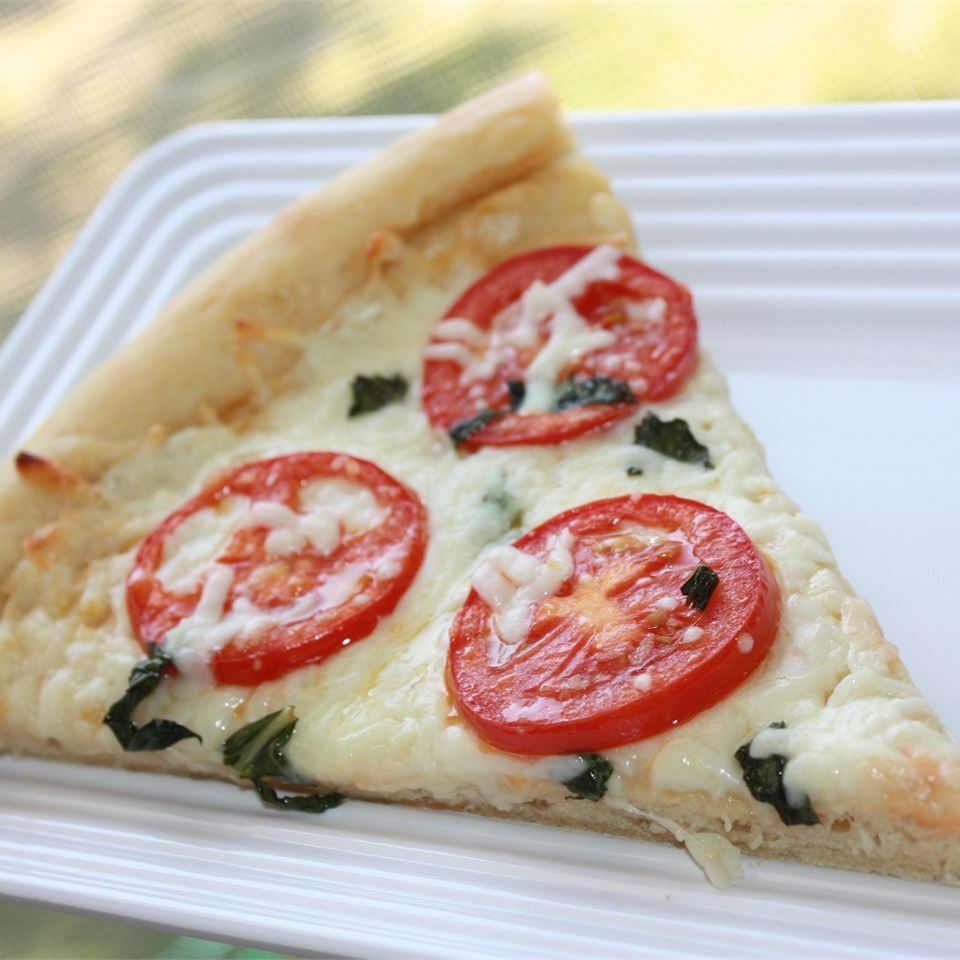

Four Cheese Margherita Pizza

Description
The four cheese margherita pizza is a fantastic version of an Italian classic revitalized by the addition of the rich flavor of feta cheese.
This recipe has a prep time of 15 minutes and a cook time of 10 minutes, so the recipe only requires 25 minutes to complete.
The recipe is for 8 servings (2 pizzas), please adjust the serving size to adjust the amount of ingredients
needed.
Nutrition Facts
Per Serving: 551 calories; protein 28.9g; carbohydrates
54.4g; fat 25.6g; cholesterol 58.4mg; sodium 1182.5mg.
Ingredients
- 1/4 cup olive oil
- 1 tablespoon minced garlic
- 1/2 teaspoon sea salt
- 8 Roma tomatoes, sliced
- 2 (12 inch) pre-baked pizza crusts
- 8 ounces shredded Mozzarella cheese
- 4 ounces shredded Fontina cheese
- 10 fresh basil leaves, washed, dried
- 1/2 cup freshly grated Parmesan cheese
- 1/2 cup crumbled feta cheese
Steps
- Stir together olive oil, garlic, and salt; toss
with tomatoes, and allow to stand for 15 minutes.
Preheat oven to 400 degrees F (200 degrees C).
- Brush each pizza crust with some of the tomato
marinade. Sprinkle the pizzas evenly with
Mozzarella and Fontina cheeses. Arrange tomatoes
overtop, then sprinkle with shredded basil,
Parmesan, and feta cheese.
- Bake in preheated oven until
the cheese is bubbly and golden brown,
about 10 minutes.